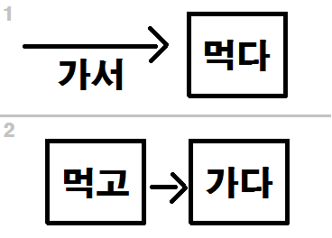

Vocabulary
Nouns:
과일 = fruit
Common Usages:
과일즙 = some sort of juice made from the juice of a fruit
과일이 상하다 = for fruit to spoil
과일이 신선하다 = for fruit to be fresh
Examples:
저는 과일을 싫어해요 = I dislike fruit
저는 주로 과일과 야채를 먹어요 = I mainly eat fruits and vegetables
사과는 가장 맛있는 과일이에요 = Apples are the most delicious fruit
저는 보통 점심식사로 과일만 먹어요 = I usually only eat fruit for lunch
저는 과일도 좋아하고 야채도 좋아해요 = I like fruit, and I like vegetables too
술 = alcohol
Common Usages:
술에 취하다 = to be drunk
술을 마시다 = to drink alcohol
술집 = bar (literally, “alcohol house”)
술배 = beer belly
술을 깨다 = to get sober
Examples:
술을 마셨어요? = Were you drinking? (did you drink alcohol?)
건강해지려고 술을 안 마실 거예요 = In order to get healthy, I will not drink alcohol
시간이 있으시면 술을 마시러 술집에 갑시다 = If you have time, let’s go to a bar to drink alcohol!
우산 = umbrella
Common Usages:
우산을 쓰다 = to use an umbrella
우산을 씌우다 = to use an umbrella to cover somebody else
Examples:
비가 올 까봐 우산을 가져왔어요 = I was worried it would to rain so I brought an umbrella
잎 = leaf
Common Usages:
나뭇잎 = a leaf from a tree
Examples:
가을에 잎의 색깔은 변해요 = The color of the leaves changes in the fall
교회 = church
Common Usages:
교회를 다니다 = to go to/attend church
Examples:
우리 가족은 일요일마다 교회를 다녀요 = Our family goes to church every Sunday
저는 내일 오전에 교회에 가야 돼요 = I have to go to church tomorrow in the morning
강 = river
Common Usages:
한강 = The Han River
강남 = south of the river/Gang-nam
Example:
강 옆에 큰 산이 있어요 = There is a big mountain next to the river
그 강은 완전히 말랐어요 = That river has completely dried up
계절 = season
Common Usages:
사계절 = four seasons
Example:
한국은 사계절이 있어요 = There are four seasons in Korea
날씨 = weather
Common Usages:
날씨가 덥다 = the weather is hot
날씨가 춥다 = the weather is cold
날씨는 어때요? = How is the weather?
Examples:
캐나다의 날씨는 아주 추워요 = Canada’s weather is very cold
저는 따뜻한 날씨를 좋아해요 = I like warm weather
오늘 날씨는 어제보다 더 따뜻해요 = Today’s weather is warmer than yesterday
부엌 = kitchen
Example:
요리사들은 저녁을 부엌에서 준비했어요 = The chefs prepared the dinner in the kitchen
담임선생님 = homeroom teacher
The pronunciation of this word is closer to “다밈선생님”
Examples:
담임선생님이 누구예요? = Who is your homeroom teacher?
그 문제에 대해 담임선생님과 함께 얘기했어요 = I talked about that problem with my homeroom teacher
방학 = vacation
Common Usages:
겨울 방학 = winter vacation
여름 방학 = summer vacation
방학 동안 = during vacation
Examples:
방학은 언제야? = When is vacation?
저는 방학 동안 공부를 많이 했어요 = I studied a lot during vacation
방학 동안 집에 안 갔습니까? = You didn’t go home during vacation?
한국에서는 겨울 방학이 여름 방학보다 더 길어요 = In Korea, winter vacation is longer than summer vacation
저는 방학 동안 책 두 권을 읽고 싶어요 = I want to read two books during vacation
방학 동안 저는 학교에 있고 싶지 않아요 = I don’t want to be at school during vacation
배 = pear
Common Usages:
배즙 = pear juice
Notes: Pears in Korea look more like apples, not like typical western pears.
Example:
한국 배는 서양 배와 달라요 = Korean pears are different from western pears
당근 = carrot
Common Usages:
당근을 자르다/썰다 = to cut/chop carrots
Notes: Young people often say “당근당근” to mean “obviously.” The actual word for obviously is “당연하다,” but because of the similar pronunciation, “당근” is often used as a joke.
Examples:
당근을 작은 조각으로 자르세요 = Cut the carrots into small pieces, please
저는 당근을 칼로 잘라서 냉장고에 넣었어요 = I cut carrots with a knife and then put them into the fridge
무 = radish
Common Usages:
무김치 = radish kimchi
Notes: A Korean radish is different from a western radish. In Canada, I am used to radishes that are red on the outside and about the size of a golf-ball. Korean radishes are about the size of an American football and green and white in color.
Example: 한국 사람들은 무김치를 많이 먹어요 = Korean people eat a lot of radish kimchi
감자 = potato
Common Usages:
감자튀김 = fried potatoes (French fries)
감자조림 = potatoes in soy sauce (common Korean side dish)
감자를 삶다 = to boil potatoes
Examples:
저는 감자를 30분 동안 끓였어요 = I boiled the potatoes for 30 minutes
저는 감자를 칼로 잘랐어요 = I cut the potatoes with a knife
칼 = knife
Common Usages:
칼로 자르다 = to cut with a knife
칼 바람 = a very cold wind
칼날 = the blade of a knife
Example:
저는 감자를 칼로 잘랐어요 = I cut the potatoes with a knife
단어 = word
Example:
저는 한국 단어 천 개를 알고 있어요 = I know 1000 Korean words
저는 여러 가지의 단어를 배우고 싶어요 = I want to learn lots of different types of words
문법은 어렵고 단어는 쉬워요 = Grammar is hard, but words are easy
그 단어를 어떻게 발음하는 지 알아요? = Do you know how to pronounce that word?
문법 = grammar
Common Usages:
영어 문법 = English grammar
한국어 문법 = Korean grammar
Example:
한국어문법은 아주 헷갈려요 = Korean grammar is very confusing
제가 공부했을 때 문법만 공부했어요 = When I studied, I only studied grammar
한국 문법은 영어 문법과 완전히 달라요 = Korean grammar is completely different from English grammar
저는 영어 문법을 열심히 공부했고 시험을 잘 봤어요 = I studied English grammar hard and then did well on the test
발 = foot
Common Usages:
발목 = ankle
발가락 = toe
발을 밟다 = to step on
Example:
저는 너무 많이 걸어서 지금 발이 아파요 = My feet are sore because I walked so much
바다 = sea
Common Usages:
바닷가 = the area around the ocean/sea
바닷물 = sea water
Examples:
저는 아이들이랑 바다에서 수영했어요 = I swam in the sea with the kids
바다 근처에 바람이 세게 불어요 = The wind is strong near the ocean
바다는 춥고 더러워요 = The ocean is cold and dirty
신문 = newspaper
Common Usages:
신문지 = literally the paper of a newspaper
신문을 읽다 = to read the newspaper
Example:
한자는 한국 신문에는 많이 사용돼요 = Hanja (Chinese characters) are used a lot in Korean newspapers
고객 = customer
Common Usages:
고객님 = a polite way to say “customer”
고객센터 = customer center
Example:
고객님들은 항상 맞아요 = The customer is (customers are) always right
그 주인은 고객님들을 잘 대우해요 = That owner treats the customers well
오늘 고객이 많고 분위기가 좋아요 = Today there are a lot of customers and the atmosphere is good
부자 = a rich person
Notes: In English “rich” is an adjective. Though there is an adjective in Korean that means “rich,” the noun “부자” is more commonly used. Note that this is not an adjective, but a noun that means a “rich person.” Therefore, when indicating that somebody is rich, Korean people usually attach 이다 to 부다. For example:
저의 친구는 부자야 = My friend is (a) rich (person)
More examples:
제 친구는 부자인 아버지를 자랑했어요 = My friend boasted about his rich father
그 사람은 10년 동안 열심히 일하고 부자가 되었어요 = That person worked hard for 10 years and then became a rich person
교육 = education
Common Usages:
교육을 받다 = to receive education
교육청 = school board/office of education
서울교육청 = Seoul Metropolitan Office of Education
교육과정 = curriculum (often said as “커리큘럼” these days)
교육감 = the superintendent of a school board
교육 제도 = the education system
Example:
한국 교육 제도는 미국 교육 제도와 달라요 = Korea’s educational system is different from America’s educational system
기분 = feelings
Common Usages:
기분이 좋다 = to be happy, feel good
기분이 나쁘다 = to feel sad, “not good”
기분이 상하다 = for one’s feelings to be “spoiled” or hurt
Example:
그 말을 들었더니 기분이 상했어요 = My feelings were hurt after hearing that
그 일이 다 끝나서 지금 기분이 아주 좋아요 = Now that that work is finished, I am very happy
산 = mountain
Common Usages:
등산하다 = to go hiking
산을 올라가다 = to go up a mountain
산을 내려가다 = to go down a mountain
산길 = a mountain path/road
산불 = forest fire
Notes: Often found in the name of cities in Korea. For example: 부산, 울산, etc…
Often used to denote the names of neighborhoods that are near a particular mountain or related to mountains. For example: 도봉산, 안산, etc…
Example:
여기서 산이 안 보여 = I can’t see the mountains from here
순서 = turn (turn to go)/order
Common Usages:
순서대로 = in order
순서를 바꾸다 = to change the order
Example:
제가 말을 할 순서예요 = It is my turn to speak
시험 = exam/test
Common Usages:
시험을 보다 = to write an exam
시험을 망하다 = to do bad on a test (literally, to “mess up a test”)
Examples:
저는 내일 시험을 볼 거예요 = Tomorrow I will write an exam
시험을 끝내기 전에 답을 확인하세요 = Check your answers before finishing the test
시험을 잘 못 볼까 봐 걱정돼요 = I’m worried that I won’t do well on the exam
저는 어제 시험을 잘 못 봤어요 = I did poorly on the exam yesterday
학생들의 20퍼센트만 시험을 합격했어요 = Only 20 percent of the students passed the exam
학생들이 시험을 보는 동안 저는 그들을 감독했어요 = I supervised the students while they wrote an exam
저는 영어 문법을 열심히 공부했고 시험을 잘 봤어요 = I studied English grammar hard and then did well on the test
Verbs:
머무르다 = to stay
머무르다 follows the 르 irregular
Common Usages:
장소에 머무르다 = to stay at a place
Notes: 머무르다 can be used as 머물다, which is actually a shortened version of 머무르다.
머무르다 can be used any way and with any grammatical principle, but must be used in accordance with the 르 irregular. For example:
한국에서 온 교환학생이 우리 집에서 1년 동안 머물렀어요 = A Korean exchange student stayed at our house for a year
However, 머물다 cannot be used with all grammatical principles.
Any grammatical principle that starts with a consonant (and there is no option other than that one consonant), can be added to 머물다. For example:
머물다 + ~자 = 머물자 = okay
머물다 + ~고 = 머물고 = okay
머물다 + 겠다 = 머물겠다 = okay
머물다 + ~지 않다 = 머물지 않다 = okay
If a grammatical principle that is added to 머물다 is a vowel – and there is no other option other than a vowel – then that grammatical principle cannot be added to 머물다. The two most common grammatical principles where this occurs is when conjugating in the past or present tenses. For example:
머물다 + ~아/어(요) = 머물어요 – this is incorrect
머물다 + ~았/었어요 = 머물었어요 – this is incorrect
See Lesson 97 for more information.
Example: 우리는 10일 동안 부산에서 머물렀어요 = We stayed in Busan for 10 days
쉬다 = to relax, to rest
Common Usages:
쉬고 싶다 = to want to relax
하루만 쉬다 = to relax for only one day
쉬는 날 = a day off/break day (literally, “rest day”)
Example:
빨리 집에 가서 쉬세요! = Go home quickly and rest!
보내다 = to send
Common Usages:
택배를 보내다 = to send a package
돌려보내다 = to send back (return)
시간을 보내다 = to spend time doing something
시집을 보내다 = “send your daughter off” (let her get married)
Example:
저는 옛날 친구한테 편지를 보냈어요 = I sent a letter to an old friend
저는 저의 여자 친구한테 문자를 보냈어요 = I sent a text message to my girlfriend
좋은 시간을 보내세요 = Have a good time!
파일을 몇 개 보냈어요? = How many files did you send?
저는 파일을 2시쯤 보낼 거예요 = I will send the file at approximately 2:00
걸어오다 = to come by walking
Notes: Compound verb of 걷다 + 오다
Example:
우리는 차가 없어서 집에 걸어왔어요 = We didn’t have a car so we walked home
걸어가다 = to go by walking
Notes: Compound verb of 걷다 + 가다
Example:
전철역까지 걸어갈래요? = Shall we walk to the subway station?
초대하다 = to invite
The noun form of this word translates to “invitation”
Examples:
친구 열 명을 저의 생일 파티에 초대했어요 = I invited ten people to my birthday party
저는 저의 친구를 파티에 초대하고 싶어요 = I want to invite my friend to the party
나는 너를 파티에 초대하고 싶지 않아 = I don’t want to invite you to the party
울다 = to cry
울다 follows the ㄹ irregular
Common Usages:
울지 마세요! = don’t cry!
Examples:
우리 애기는 매일 밤 많이 울어요 = Our baby cries a lot every night
엄마가 갔을 때 저는 울었어요 = When mom left, I cried
환영하다 = to welcome
Example:
제 여자 친구는 저의 남동생을 반갑게 환영했어요 = My girlfriend happily welcomed my younger brother
Adjectives:
반갑다 = to be happy when meeting somebody
The pronunciation of this word is closer to “반갑따”
반갑다 follows the ㅂ irregular
Notes: As a beginner, you will mostly use 반갑다 when you say “만나서 반갑습니다,” or as “반갑게” as shown in the examples below.
Example:
만나서 반갑습니다 = nice to meet you
저는 친구에게 반갑게 인사했어요 = I greeted my friend happily
따뜻하다 = to be warm
The pronunciation of this word is closer to “따뜨타다”
Common Usages:
따뜻하게 = warmly
따뜻하게 입다 = to dress warmly
따뜻한 마음 = a warm heart
날씨가 따뜻하다 = for the weather to be warm
Examples:
날씨가 추워서 따뜻한 옷을 입었어요 = The weather is cold, so I put on warm clothes
그 사람의 마음은 따뜻해요 = That person has a warm heart
저는 따뜻한 날씨를 좋아해요 = I like warm weather
오늘 날씨는 어제보다 더 따뜻해요 = Today’s weather is warmer than yesterday
저는 따뜻한 옷을 입고 싶어요 = I want to wear (put on) warm clothes
오늘 너무 힘들어서 저는 따뜻한 목욕을 하고 싶어요 = Today was really difficult, so I want to take a warm bath
높다 = to be high
The pronunciation of this word is closer to “놉따”
Common Usages:
밀도가 높다 = to be dense (literally, for the density to be high)
Notes: To increase (or to heighten) something, the verb 높이다 can be used.
Examples:
애기는 높은 소파에서 떨어졌어요 = The baby fell from the high sofa
그 건물은 너무 높아요 = That building is very high
한국 집값은 일본 집값보다 훨씬 높아요 = The price of Korean houses is much higher than the price of Japanese houses
가난하다 = to be poor
The noun form of this word translates to “poverty”
Common Usages:
가난한 사람 = poor person
가난한 동네 = poor neighborhood
Examples:
저는 매우 가난해요= I am very poor
그 동네에는 가난한 사람이 많아요 = There are many poor people in that neighborhood
낮다 = to be low
The pronunciation of this word is closer to “낟따”
Notes: To decrease (or to lower) something, the verb 낮추다 can be used.
Examples:
이 탁자가 너무 낮아요 = This table is too low
의자는 탁자보다 더 낮아요 = The chair is lower than the table
이 산은 높고 저 산은 낮아요 = This mountain is high, but that mountain is low
Adverbs and Other words:
권 = a counter for books/magazines/etc
Common Usages:
책 한 권 = one book
Example:
저는 1년에 책 열 권을 읽을 수 있어요 = I can read 10 books in one year
분 = ‘person’ – high respect form, also a high-respect counter for ‘people’
Notes: This is used instead of “사람” when the person deserves high respect. “분” is also used instead of “명” as a counter when the person deserves high respect.
Example: 그 분은 저의 선생님이에요 = That person is my teacher
선생님 몇 분 올 거예요? = How many teachers will come?
Introduction
In this lesson, you will be introduced to your first (of very many) connecting particles in Korean. You can usually use these particles to separate two ideas/phrases/sentences. In this lesson you will learn about 고 and how it can be used in sentences, also using the example of ~고 싶다. You will also learn that some words (usually position-like words) play by different rules than most verbs in these situations.
Connecting Particle ~고
When studying Korean, eventually your entire life becomes learning about the various connecting particles and their respective meanings. There are so many of these things, whose functions are essentially to connect two clauses, sentences, or ideas. These particles usually get attached to the end (i.e. the adjective/verb) of one clause connecting it to the next clause. The simplest one of these connecting particles is ~고, which can be attached to the stem of a verb/adjective.
The most basic usage of ~고 is to indicate that one action occurs, and then something happens after that. The most common translation of this usage of “~고” is “then.” For example:
저는 밥을 먹고 갈 거예요 = I will eat then go
저는 자고 한국어를 공부했어요 = I slept then studied Korean
저는 책을 읽고 바로 잤어요 = I read a book then slept immediately
저는 10분 동안 쉬고 갈 거예요 = I will rest for 10 minutes then go
애기가 1분 동안 울고 배를 먹었어요 = The baby cried for 1 minute and then ate a pear
저는 당근을 칼로 자르고 냉장고에 넣었어요 = I cut the carrots with the knife then put (them) in the fridge
우리는 서울에서 2일 동안 머무르고 부산에 갈 거예요 = We will stay in Seoul for two days, then go to Busan
If you really want to stress that you are doing something after doing something else, you can add 나서 after ~고. For example:
저는 숙제를 끝내고 나서 집으로 갈 거예요 = I will finish my homework and then go home
저는 친구를 만나고 나서 은행에 갈 거예요 = I will meet a friend and then go to the bank
In the sentences I presented so far, ~고 represents the meaning of ‘then,’ but it doesn’t always have that meaning. It can also be used to simply connect two clauses that have a similar idea. For example:
저는 과일도 좋아하고 야채도 좋아해요 = I like fruit, and I like vegetables too
*Notice that 도 can be added to both 과일 and 야채 in this example. In English, we would just say “I like apples and vegetables too.” That sentence only has one “too,” but in Korean, 도 can be used twice. That sentence before could also be said like this:
저는 과일과 야채도 좋아해요 = I like fruit and vegetables too
Essentially, ~고 is used to connect two sentences/clauses together. Korean people LOVE making their sentences as short as possible – and using ~고 is one way of doing this. All of the sentences above could be separated into two sentences. I don’t need to write all of them, but for example:
저는 밥을 먹을 거예요. 그리고 저는 갈 거예요
= 저는 밥을 먹고 갈 거예요
저는 잤어요. 그리고 저는 한국어를 공부했어요
= 저는 자고 한국어를 공부했어요
저는 과일을 좋아해요. 저는 야채를 좋아해요
= 저는 과일도 좋아하고 야채도 좋아해요
You can also use ~고 when you want to string together adjectives to describe something. Again, while each of these sentences could be split into two separate sentences, you can use ~고 to connect two clauses with a similar idea. For example:
그 사람은 착해요. 그 사람은 똑똑해요 = That person is nice. That person is smart.
= 그 사람은 착하고 똑똑해요 = That person is kind and smart
저의 여자 친구는 귀여워요. 저의 여자 친구는 예뻐요 = My girlfriend is cute. My girlfriend is pretty.
= 저의 여자 친구는 귀엽고 예뻐요 = My girlfriend is cute and pretty
오늘 고객이 많아요. 오늘 분위기가 좋아요 = Today there are a lot of customers. Today the atmosphere is good
= 오늘 고객이 많고 분위기가 좋아요 = Today there are a lot of customers, and the atmosphere is good
In a lot of Korean grammatical principles that connect sentences (which you will start learning a lot of soon), you will notice that the verb/adjective in the first clause is not conjugated, and that the grammatical principle is added directly to the stem of the word in the first clause. In these cases, the tense is usually indicated in the final verb/adjective of the sentence and the tense of the first verb/adjective can usually be implied by the context.
When attaching ~고 to the first clause, it is possible for the first verb/adjective to be conjugated. I have noticed that there are two cases when you would do this:
1) When one action happens after another action (just like I introduced at the beginning of this lesson), but when a considerable amount of time has passed between the two actions. The two actions are often connected in a way in that the first clause led to the possibility of the second clause to happen. For example:
저는 열심히 공부했고 의사가 되었어요 = I studied hard and (then) became a doctor
저는 영어 문법을 열심히 공부했고 시험을 잘 봤어요 = I studied English grammar hard and then did well on the test
Notice that Korean people say “시험을 보다” to mean “to take/do a test”
2) When connecting two clauses that have a similar idea that both happened in the past tense. Here, there is no real indication of one action happening after another. Instead, the person is just indicating that both things happened. For example:
저는 방학 동안 영어 문법을 많이 공부했고 영어 신문도 많이 읽었어요 = During vacation I studied a lot of English grammar, and I also read a lot of English newspapers
The sentences I provided at the beginning of the lesson (where one clause happens [right] after the other clause) would sound awkward if the first clause was conjugated. For example:
저는 잤고 한국어를 공부했어요
저는 책을 읽었고 바로 잤어요
You started learning about the particles ~는/은 and ~이/가 in Lesson 2. I continue to discuss the difference in purpose between these particles later in the lesson. Before that, I would like to introduce you to usage of ~는/은 because it is commonly used in sentences with ~고.
In Lesson 2, I mentioned that ~는/은 has a comparative function. One way that it is often used is to say “this thing is one way, and this other thing is another way.” For example:
이 산은 높아요. 저 산은 낮아요. = This mountain is high. That mountain is low.
문법은 어려워요. 단어는 쉬워요. = Grammar is difficult. Words are easy.
이 사람은 부자예요. 저 사람은 가난해요 = This person is rich. That person is poor.
이분은 저의 아버지입니다. 이분은 저의 어머니입니다. = This person is my father. This person is my mother
In these situations, it is common to use ~고 to connect the two sentences as they are expressing a similar idea. In these cases, ~는/은 is attached to both things that are being compared. For example:
이 산은 높고 저 산은 낮아요 = This mountain is high, but that mountain is low
문법은 어렵고 단어는 쉬워요 = Grammar is hard, but words are easy
이 사람은 부자이고 저 사람은 가난해요 = That person is rich, but that person is poor
이분은 저의 아버지이고 이분은 저의 어머니입니다 = This person is my father, and this person is my mother
I continue to talk about the use of ~는/은 and ~이/가 later in the lesson.
For now, let’s move on to applying this meaning to other verbs.
Using ~아/어서
Another way to indicate that one action happens after another action is to attach ~아/어서 to the verb in the first clause. The verb before ~아/어서 is never conjugated to the past tense. For example:
저는 당근을 칼로 잘라서 냉장고에 넣었어요 = I cut carrots with a knife and then put them into the fridge
You must be thinking, then: “What is the difference between using ~고 and using ~아/서.” For example:
저는 당근을 칼로 잘라서 냉장고에 넣었어요 = I cut the carrots with the knife then put them in the fridge
저는 당근을 칼로 자르고 냉장고에 넣었어요 = I cut the carrots with the knife then put them in the fridge
Both sentences are effectively saying the same thing.
However, from my experience ~아/어서 is more likely to be used when the action of the first clause is intrinsically linked with the action of the second clause.
The best way to explain this is to look at why specifically ~아/어서 is more commonly used with the verbs 가다 and 오다 instead of ~고.
If you want to say that you go somewhere then do something, you should not say this:
저는 학교에 가고 공부할 거예요
Instead of ~고, you must add ~아/어서 here:
저는 학교에 가서 공부할 거예요 = I will go to school and then study
Likewise, if you want to say that you come somewhere and do something, you should not say this:
우리는 집에 오고 바로 잤어요
Instead of ~고, you must add ~아/어서 here:
우리는 집에 와서 바로 잤어요 = We came home and went to sleep immediately
The reason for this is simply due to the nature of the verbs 오다 and 가다. When connecting two clauses with ~고 containing other verbs, (for example: 먹다), the first and second action, despite the fact that one happened before the other one, have no real connection. For example, in an example I presented previously:
저는 밥을 먹고 갈 거예요 = I will eat and then go
This sentence is implying that you will eat, and then finish eating, and then go somewhere. Aside from the fact that one happened after another, the act of eating didn’t affect the act of going.
However, with “가다” and “오다,” the fact that you are “coming” or “going” is directly connected to the next action, in that, in order to do the second action, you needed to have gone somewhere or came from somewhere.
I drew a picture to express the image that I have in my brain about this explanation.

When you use 가서 … 먹다, the verb of “going” leads up to the verb of “eating.” However, when you use 먹고 … 가다, even though the verb of “eating” happened before the verb of “going,” they aren’t related to each other.
In this same sense, it is possible to attach ~아/어서 to verbs other than 가다 or 오다 to connect two clauses. Below are some examples that show this being done:
우리는 맛있는 고기를 골라서 같이 먹었어요 = We chose delicious meat then ate together
문을 열어서 밖으로 나갔어요 = I opened the door and then went outside
While it is very important to know how to use “~고”, and how to use “~아/어서” with “가다/오다” at this point, being able to fully understand the nuance of adding “~아/어서” to other words is beyond your current ability. The usage of ~아/어서 is much more complex, and I will continue to discuss its usage in Lesson 70. Also note that the sentence connector ~아/어서 has another meaning that will be discussed in Lesson 37.
It is possible to connect ~고 to “가다” and “오다”, but only in situations where the speaker is connecting sentences that have a similar idea, and not where one goes/comes to a place and does something.
For example, I was in my office today and one of my coworkers was telling a current student about all the former students who came to visit him the day earlier (it was Teacher’s Day). He said:
혜원도 오고… 슬기도 오고… 승하도 오고… 지혜도 오고… = 혜원 came, 슬기 came, 승하 came, 지혜 came, …
Position verbs
There are also many position verbs that usually act differently than regular verbs (not just in this situation, but in many situations). The most common of these are to sit (앉다), stand (서다), and to lie down (눕다).
The reason these are treated differently is because these are verbs of position. For example, if I just said:
저는 먹고 공부했어요 = I ate and studied
In that sentence, aside from the fact that one action happened after another, 먹다 and 공부하다 have no relation to each other. However, if you were to say:
저는 눕고 책을 읽었어요 – That would mean “I lied down, and then read a book” – as in, I lied down, stood up again, and then read a book. I guess technically you COULD do that, but nobody would ever do that. Instead, what you wanted to say is that you lied down, and then, while lying down, you read a book. In these situations with position verbs, the first action is related to the second action (similar to how 가다 and 오다 are related to the upcoming verb). That is why they are treated differently.
If you want to use these position verbs in this way, you need to add ~아/어서 to them:
저는 누워서 책을 읽었어요 = I lied down and read a book
나는 앉아서 쉴 거야 = I’m going to sit down and relax
저는 줄에 서서 순서를 기다렸어요 = I stood in line and waited for my turn
I want to: ~고 싶다
As I said earlier, ~고 is a verb that can connect two clauses/sentences together. However, there are many other usages of ~고 when also combined with other words. What you are about to learn is SO common (in Korean and English), and I almost want to apologize for waiting until lesson 17 to finally introduce it to you. I just felt that there were other things you needed to learn before this.
Anyways, enough apologizing, lets get down to business.
Adding ~고 싶다 to the stem of a verb gives it the meaning of “I want to ____.” Very easy to use:
저는 한국어를 배우고 싶어요 = I want to study Korean
저는 캐나다에 가고 싶어요 = I want to go to Canada
저는 여자친구를 위해 편지를 쓰고 싶어요 = I want to write a letter for my girlfriend
저는 새로운 차를 사고 싶어요 = I want to buy a new car
저는 내일 쉬고 싶어요 = I want to rest tomorrow
저는 저의 친구를 파티에 초대하고 싶어요 = I want to invite my friend to the party
저는 방학 동안 책 두 권을 읽고 싶어요 = I want to read two books during vacation
It can be used with 되다 to indicate that you want to be/become something:
저는 선생님이 되고 싶어요 = I want to be/become a teacher
It can be used in the past tense as well:
저는 선생님이 되고 싶었어요 = I wanted to become a teacher
그 여자는 나랑* 결혼하고 싶었어 = that girl wanted to marry me
Notice that when talking about ‘marrying’ somebody, ‘with’ must be used in Korean instead of attaching ‘를/을.’ Because of this difference in English and Korean, many Korean people will mistakenly say “I want to marry with you.”
Actually, you have come across this ~고 싶다 grammar concept before, but you probably didn’t even realize it. In Korean, there are two ways to say “I miss ____.” One way is to use the word “그립다” and is used when you “miss” something other than a person (I miss my hometown). The word for missing a person in Korean is 보고 싶다. See anything funny about that word? 보고 – 싶다? Literally, it means “I want to see:”
저는 친구를 보고 싶어요 = I miss my friend/I want to see my friend
~고 싶다 is not used with adjectives. In English, it is acceptable to say something like “I want to be happy.” If you want to say something like this in Korean, you need to add an additional grammatical principle that changes the meaning to “I want to become happy.” You will learn how to create this meaning with ~아/어지다 in the next lesson.
One thing to note is that 싶다 actually acts as an adjective, and must be conjugated as one. This means that:
나는 먹고 싶다 (I want to eat) would be a correct conjugation, however
나는 먹고 싶는다, would be an incorrect conjugation
Also, notice the difference between 원하다 and ~고 싶다. You can say 원하다 when you want an object:
저는 그 책을 원해요 = I want that book
and you can use ~고 싶다 when you want to do a verb:
저는 그 책을 읽고 싶어요 = I want to read that book
You can also use “안” or attach “~지 않다” to 싶다 to indicate that one does not want to do something. For example:
저는 술을 안 마시고 싶어요 = I don’t want to drink alcohol
저는 울고 싶지 않아요 = I don’t want to cry
나는 너를 파티에 초대하고 싶지 않아 = I don’t want to invite you to the party
저는 부자가 되고 싶지 않아요 = I don’t want to become a rich man
방학 동안 저는 학교에 있고 싶지 않아요 = I don’t want to be at school during vacation
Sometimes you will learn grammatical principles that are not used so much – but the concepts you learned in this lesson are used all the time. Up until now, actually, it has been hard for me to continue to create good example sentences without the use of ~고 and ~고 싶다.
The further and further you go along in these lessons, the more complicated the example sentences will become!
Before you move to the next lesson, I would like to continue the discussion from Lesson 2 about ~이/가 and ~는/은.
~는/은 and ~이/가 Revisited
Now it is time to continue what was presented back in Lesson 2. In Lesson 2, you started learning about the differences between ~이/가 and ~는/은.
Now that you have increased your understanding of Korean grammar, I can continue to explain the nuances between ~이/가 and ~는/은. At this point, I encourage you to re-read Lesson 2 in order to refresh yourself on what we talked about at that time.
One problem with both of these particles is that they both have many functions. Another specific function of ~는/은 (in addition to the comparison function that you learned in Lesson 2 and the examples I showed you earlier in the lesson) is to indicate a general fact or statement. For example:
Rocky (로키) 산은 높아요 = The Rocky Mountains are high (the Rocky Mountain is high)
This would be said as a general fact. Everybody would typically know that the Rocky Mountains are high, so this could be said in a general way as seen as above. This can be contrasted with ~이/가. Used this way, ~이/가 wouldn’t be used to describe a general fact about something. Rather, it would be used to describe a specific situation that (usually) the speaker just realized or observed. For example, if you were hiking with your friend, and suddenly got a glimpse of a nearby mountain, you could say:
와! 산이 높다! = Wow! The mountain is high!
Note here that even though the speaker is talking about this one specific mountain, he or she is not comparing it with something else (for example, another mountain), as this would require the use of ~는/은 (albeit, in its other usage)
Let’s look at more simplified versions of the sentences above:
산은 높다
산이 높다
Remember that the difference between ~이/가 and ~는/은 is more about nuance, and not about creating a different translation in your head. If I attempted to make a translation that describes this nuance for the two examples above, I could maybe write:
산은 높다 = In general, mountains are high
산이 높다 = This mountain that I’m looking at, which I’ve never seen or noticed before, is high
At the same time (and this is where people really get confused with these particles) ~는/은 could be used in this situation to have a comparing function. For example, I could say:
이 산은 높아요. 하지만, 저 산은 낮아요 = This mountain is tall. But that mountain is low (small)
This is precisely what causes the confusion among foreigners when trying to distinguish the difference between ~이/가 and ~는/은. Both of them can be used to express different nuances that seem to overlap each other. For example, if I say:
“산은 높다”
What am I trying to say? Am I trying to say…:
“In general, mountains are high”, or
“This mountain, in comparison to that other mountain (or maybe some other thing) is high”
The only way you can distinguish between the particular nuances being used is by understanding the situation in which they are said.
Let’s look at another example. If I said:
여름 날씨는 좋다 = (in general) summer weather is good
The purpose of this sentence would be to express a general fact about summer weather. That is, that summer weather is (in general) good. However, if you just walked outside and saw /experienced that the weather is good, you would be more inclined to say:
날씨가 좋다 = The weather (right now that I am experiencing) is good
Here, the speaker is just indicating that the weather at the moment is good, and is not talking about the weather being good all the time.
This doesn’t mean that “날씨는 좋다” is incorrect. You most definitely could use that sentence, but only in an appropriate situation. This was the dialogue I had with a Korean person:
- Me: When would you be able to say “날씨는 좋다”. It clearly isn’t used as a general statement, because weather (in general) isn’t always good. So when could I say this?
- Korean person: It sounds like you are comparing it with something. Like, you are saying that the weather is good, but something else might be bad.
- Me: For example?
- Korean person: Maybe, “여기 음식이 맛이 없어요. 하지만 날씨는 좋아요.” (The food here isn’t delicious, but the weather is good). Here, you’re saying that the weather is good, but the food is bad.
Let’s look at another example:
다이아몬드는 딱딱하다 = (in general) Diamonds are hard
(This is a statement that can be applied generally. Most people would know that diamonds are hard, and this is not new information or anything like that)
However, if somebody picked up a diamond and felt it, and realizes exactly how hard that particular diamond is, they would be more inclined to say:
다이아몬드가 너무 딱딱하다 = Diamonds are hard (due to the experience that I have right now with this diamond, I can see/realize that this diamond is very hard!)
(Please try to ignore my attempt to translate this nuance. It would never actually be translated to that.)
Now, if we changed the noun:
밥은 딱딱하다 = The rice is hard
This would not be expressed as a general statement. Why? Because rice is generally not hard. However, if you were about to have dinner with the rice on your plate and you touched it, you could say:
밥이 딱딱하다 = The rice is hard (due to what I am experiencing right now, I can say that this particular rice is hard)
(Again, please ignore this ridiculous translation)
Now this:
밥은 딱딱하다 = The rice is hard
Again, this is not a general statement. Therefore… is it wrong?
No, because there are other purposes of ~는/은. Maybe here the speaker wanted express the comparison function of ~는/은. Maybe to say that the soup is hot (and ready to eat), but the rice is hard. Remember, all of this is situational.
Another example: (빨갛다= red, 노랗다= yellow. These words aren’t introduced until Lesson 23. Sorry.)
사과는 빨갛다 = (in general) apples are red, or
사과는 빨갛다. 바나나는 노랗다 = Apples are red. Bananas are yellow
사과가 빨갛다 = the apple is red (the apple that I am looking at that I just noticed)
사과가 파랗다 = the apple is blue (this would not normally be the case and therefore would never be used with ~는/은 to express a general statement meaning. However, ~이/가 is used here to specifically describe the apple that the speaker is experiencing – which may or may not follow what is typical of other apples)
의사들은 똑똑하다 = (in general), doctors are smart
그 의사가 아주 똑똑하다 = the doctor is smart (the one specific doctor who is in the room, for example)
This is why, when you want to say “it is raining” you must use the following sentence:
비가 와요 = It’s raining
Instead of:
비는 와요… (incorrect)
The use of “비는 와요” would suggest that, in general, it rains; which wouldn’t make sense. Instead, the fact that it is raining/rained/will rain would always fall into the particular situation that “이/가” is used for.
I said this at the end of Lesson 2, but I’m going to say it again here. Your understanding of exactly when to use ~는/은 over ~이/가 and vice-versa will progress with your general understanding of Korean grammar.
Also remember that sentences (in every language, including Korean) are usually much more complicated than what is presented in this lesson. In addition, very rarely are sentences said as just ‘one-off’ sentences. Rather, they are said in response to a question or statement, which is important information in understanding the nuances of both ~이/가 and ~는/은.
I am sorry to do this again, but you still haven’t learned everything you need to know about ~이/가. Once again, I need to send you along without having learned everything.
In order to understand the next explanation detailing the usages of ~이/가 and ~는/은, you need to have some understanding of how questioning works in Korean. I will continue this explanation at the end of Lesson 22.
Want to try to create some sentences using the vocabulary and grammar from this lesson?